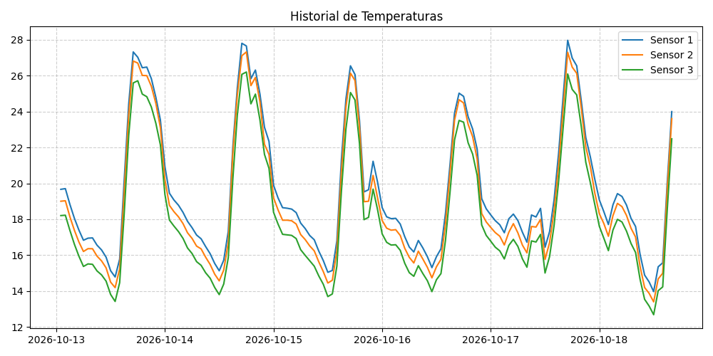
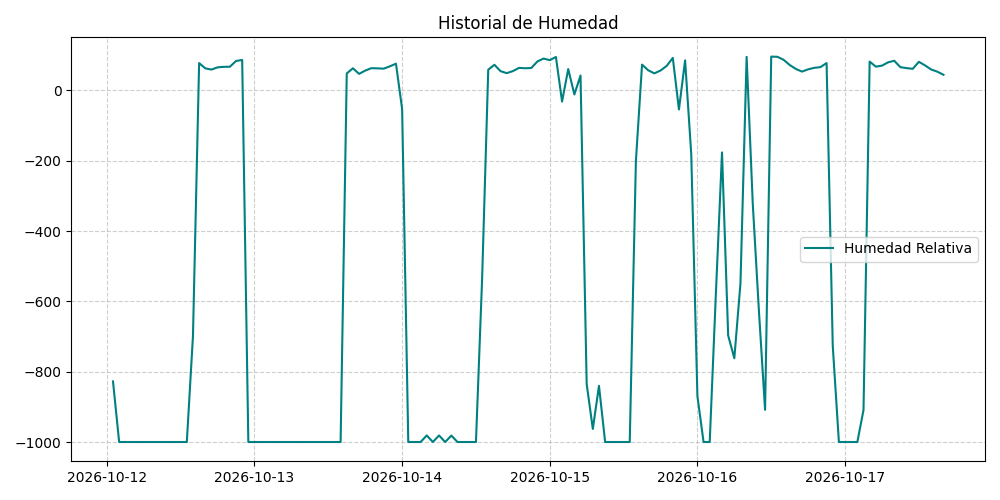

Última actualización: 2026-10-13 15:02:11 Estaciones: Zona Tláhuac - Chalco
Como analista de hardware IoT, he procesado el conjunto de datos correspondiente al periodo del registro. A continuación, presento el análisis estructurado:
Basado en los registros máximos y mínimos de temperatura de los sensores:
* Día más caluroso: 11 de octubre de 2026. Se registró la temperatura máxima del periodo en la hora 17:00:00Z con un pico de 25.30 °C en el temp_sensor1 (y valores sostenidos altos por encima de los 25°C durante varias horas de la tarde).
* Día más frío: 11 de octubre de 2026 (en su ciclo matutino) / 13 de octubre de 2026. Las temperaturas más bajas se registraron el día 11 a las 11:00:00Z y el 13 a las 12:00:00Z, descendiendo hasta los 13.03 °C en el temp_sensor3.
Los niveles pico de radiación (Visible, Infrarroja y UV) ocurren de manera consistente en la franja vespertina: * Franja horaria crítica: Entre las 16:00:00Z y las 19:00:00Z (con un pico absoluto centrado a las 17:00:00Z). * Valores máximos registrados: * Radiación IR: 7,183.27 W/m² (11 de Oct, 19:00:00Z) * Radiación Vis: 815.39 lux/W/m² (11 de Oct, 19:00:00Z) * Radiación UV: 2.98 índice UV (11 de Oct, 19:00:00Z)
Se detectaron anomalías críticas y comportamientos erráticos en el bus de datos correspondientes a fallas de hardware:
* Falla Crítica en el Sensor de Humedad: El sensor presenta lecturas constantes de -999.9 durante la gran mayoría del tiempo (indicador clásico de un código de error por desconexión, timeout o lectura nula/NaN en firmware embebido).
* Corrupción de Datos (Out-of-Range): Ocasionalmente, el sensor de humedad arroja valores negativos imposibles y físicamente inválidos para el entorno (ej. -865.24, -734.78, -572.42), lo que sugiere un falso contacto, problemas de puesta a tierra (GND) o fallo en el ADC del microcontrolador.
* Integridad Térmica: Los sensores de temperatura (temp_sensor1, 2 y 3) muestran una correlación lógica y saludable entre ellos, descartando fallas térmicas mayores, aunque operan con un léger desfase debido a su ubicación física en el circuito impreso o gabinete IoT.

